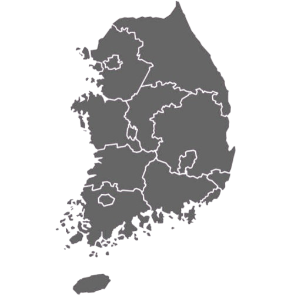
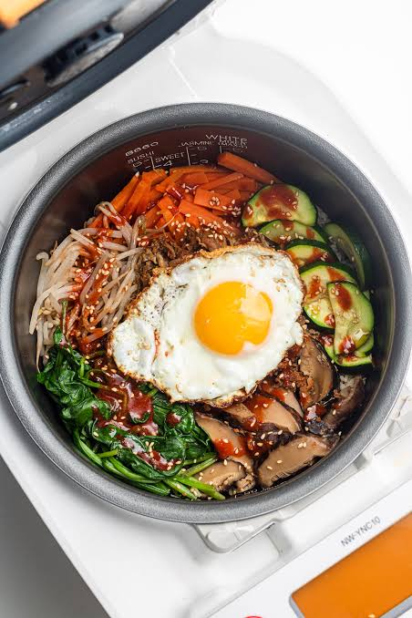
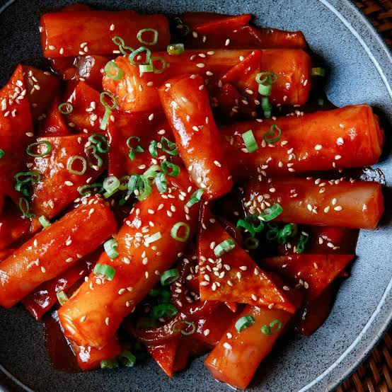
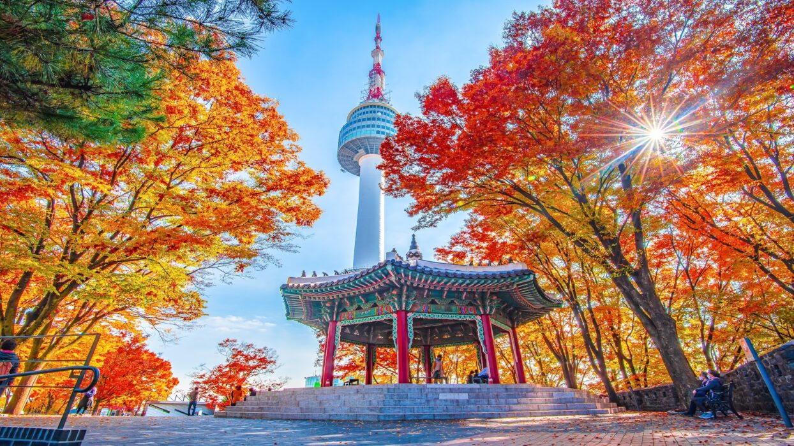
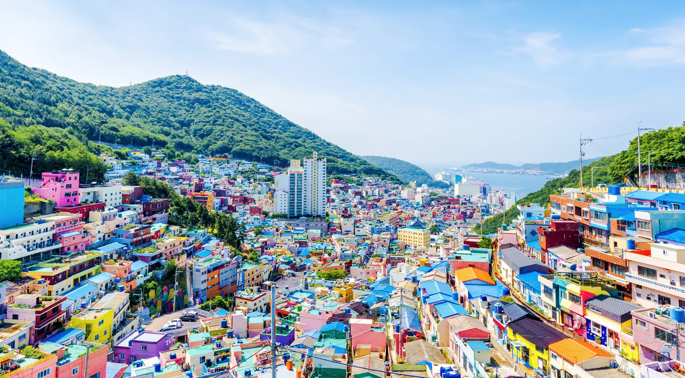
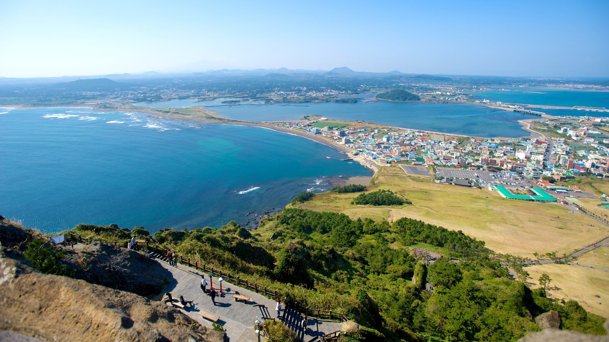

"너는 너대로, 나는 나대로. 그게 제일 좋은 거지."

A warm rice bowl topped with mixed vegetables, chili paste (gochujang), meat, and a fried egg.

Chewy cylindrical rice cakes cooked in a sweet and spicy chili sauce.
Stir-fried glass noodles with vegetables and meat, seasoned with soy sauce and sesame oil.

The capital of South Korea, known for its vibrant culture, historic palaces, and modern skyline.

The second-largest city in South Korea, known for its beautiful beaches, vibrant nightlife, and the Gukje Market.

An island province known for its natural beauty, including volcanic landscapes, cherry blossoms, and unique culture.